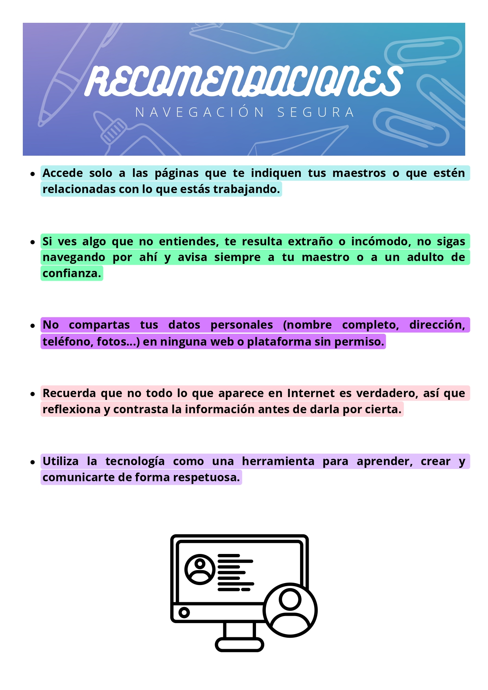

TEN CUIDADO CON INTERNET
Durante esta Situación de Aprendizaje, usaremos diferentes recursos en Internet para investigar, aprender y crear. Sin embargo, es muy importante que recuerdes algo fundamental: navegar por Internet con responsabilidad y precaución.
MARÍA DEL MAR PÉREZ (CCO)